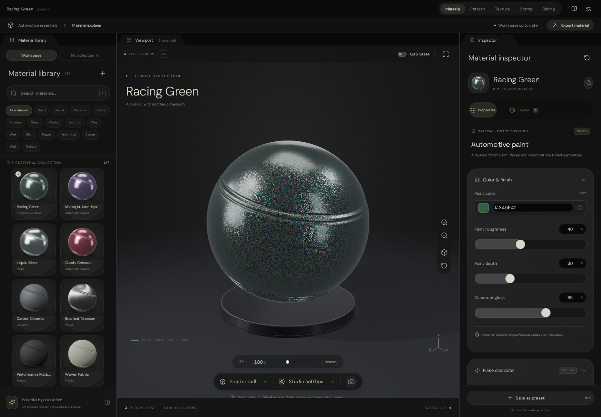
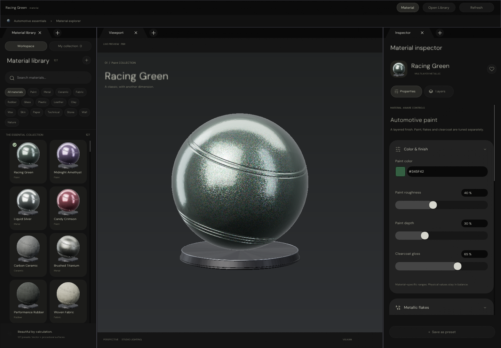
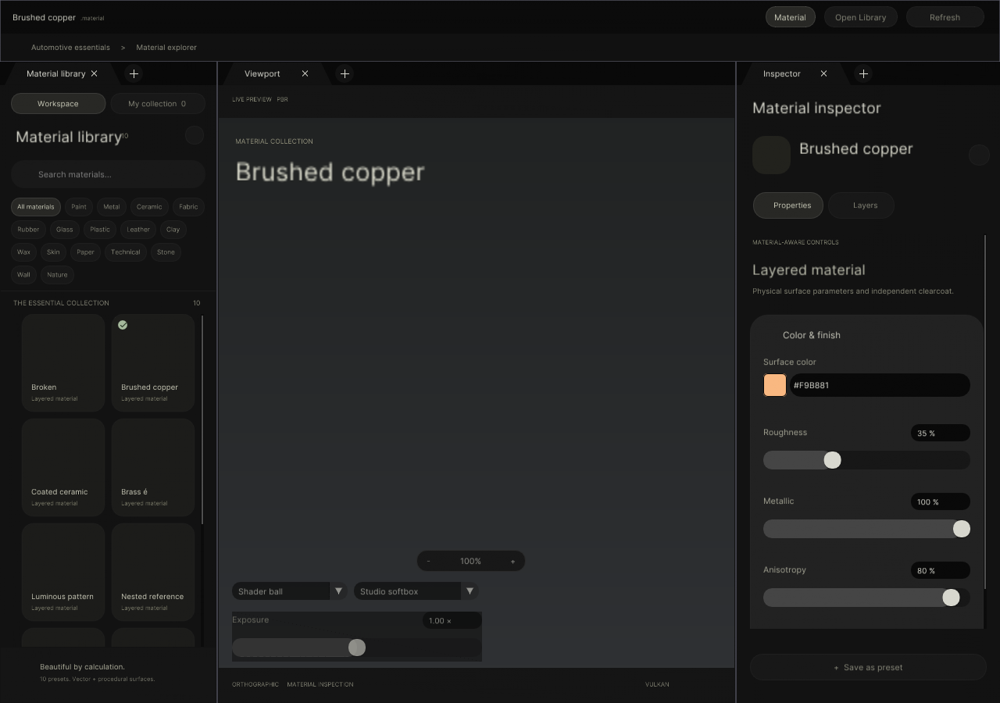
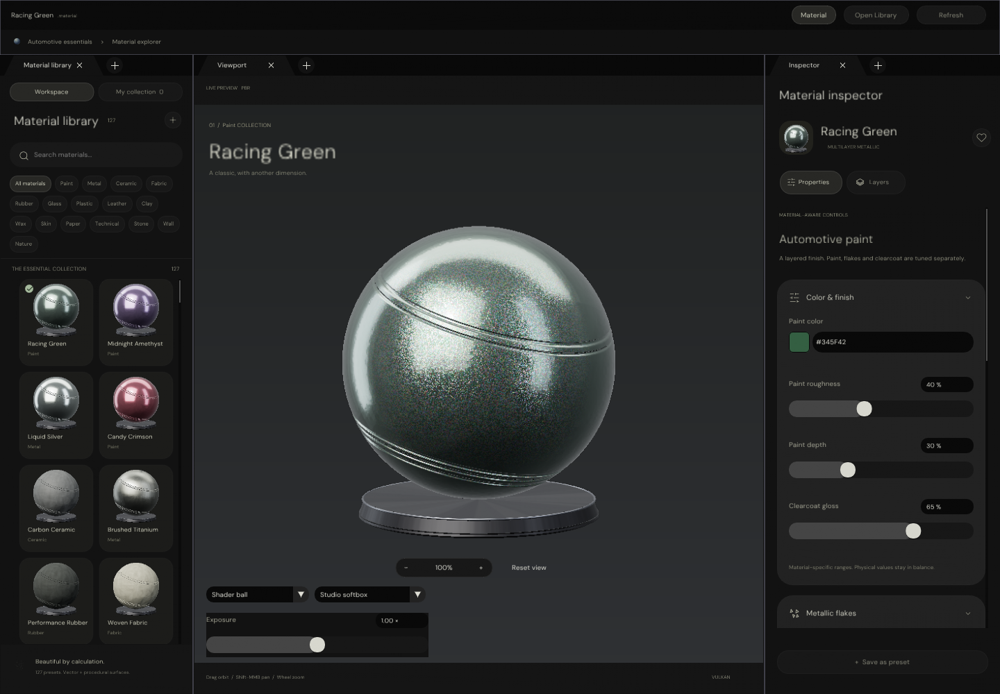
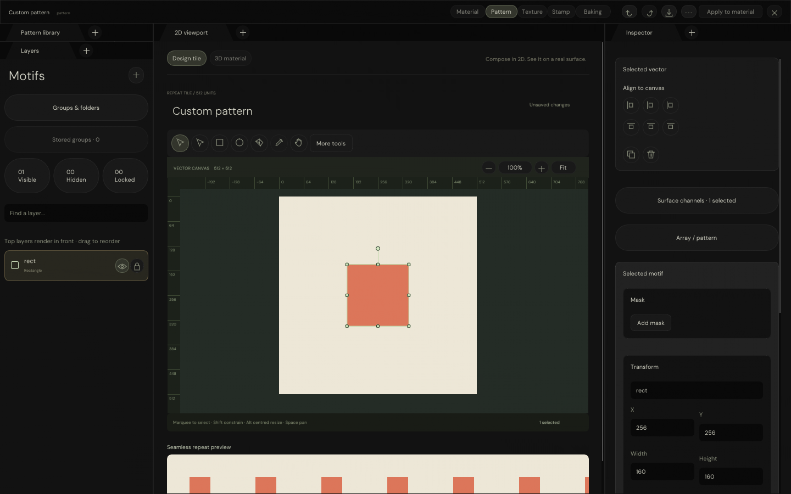
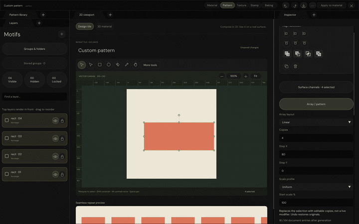
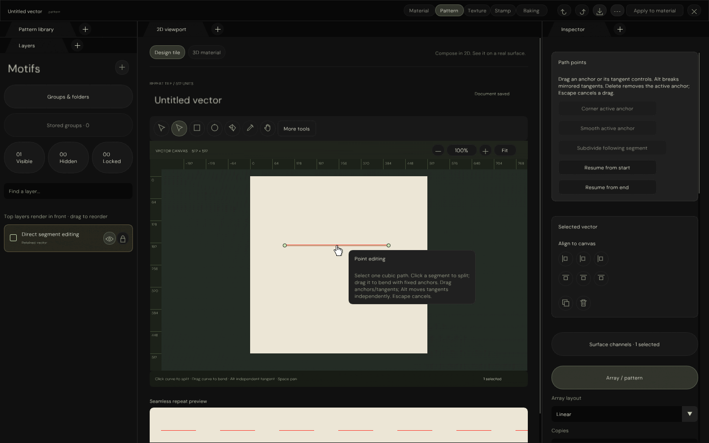
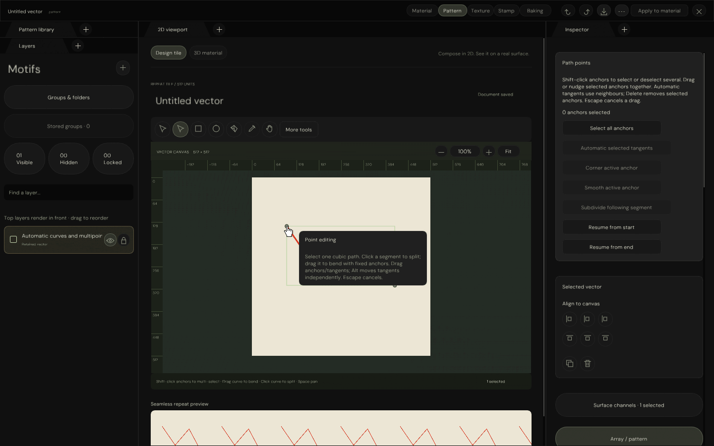
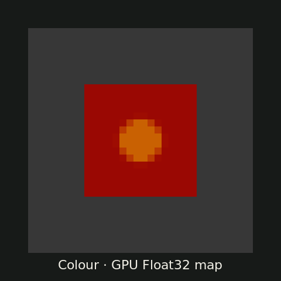
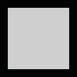

C++ Port Evidence Hub
Revision 3e20aab · rebuilt in this session where the sandbox permits. Native captures are CPU/SwiftShader
host executions — not Windows desktop or hardware-GPU sessions. HTML captures are actual Chromium runs of
the Alloy reference (Experimental/TextureStudio).
Rebuild: 21/21 CPU validations passed · 2026-10-20 · GCC 12.2 Debug + ASan/UBSan docking confirmation
How far is the C++ port?
Alloy workspaces vs native C++ panels. Detail: TextureStudio evidence log, Native Pattern workspace, active plan.
| Alloy workspace (HTML) | Native C++ owner | Status | Evidence |
|---|---|---|---|
| Material library + inspector + preview | UI/TextureStudio/MaterialLibraryPanel |
Functional · 127 presets · GPU atlas + live preview · automotive paint | native composition · HTML reference · checks |
| Pattern studio (vector authoring) | UI/TextureStudio/PatternWorkspacePanel |
~68% · shapes/pen/points/join/arrays/masks · 626 checks | native panel · HTML layers · checks |
| Pattern Float32 surface maps → PBR | Engine/Render/VectorSurface* + bridge |
Bridge 95% · 7 RGBA32F channels · live-preview replace only | surface evidence · PBR GIF |
| Texture / Stamp / Baking studios | — | Not ported · tabs disabled in native header | HTML tools · HTML stamp |
| Project Browser (Frontier entry) | UI/Editor/ProjectBrowserPanel |
3-column browser · Blank Project only · no scene rendering | browser evidence · checks |
| Control Centre / docking / notifications | UI/Editor/* + Engine/Interface/* |
Ported foundations · CPU-validated · Windows interaction pending | centre · docking |
| Windows binaries / hardware GPU | CI + Automation/Package*.py |
Blocked · unsigned preview hold · no Windows run this session | trust gate |


Material workspace — HTML reference vs native C++

HTML reference (Chromium/WebGL)
Actual Alloy capture · Racing Green selected · 1440×1000.
Native C++ (CPU raster + Vulkan readback)
Composed exhibit · not a Windows window screenshot. checks

Native library cards
CPU raster of executed ImGui · GPU atlas tiles in production path.

Preview inspection
Zoom pill · shape/environment/exposure controls · orbit/pan gestures.Pattern workspace — native C++ captures

Native Pattern panel
Motifs · 2D viewport · Inspector · GPU canvas pixels.

Edit sequence
606 checks · 340 coverage + 63 selection dispatches.

Segment editing
Click-to-split · drag-to-bend · Undo/Redo · Escape cancel.

Multipoint
Shift-select · group move · automatic tangents · batch nudge/delete.

Seven Float32 channels
Actual Vulkan readbacks (8-bit GIF display; PFM holds Float32).
Float32 → PBR
Baseline · authored maps · fabric edit with gold thread isolated.More: pen · joining · refinement · clipboard · rotation · resize · marquee · dropdowns


Project Browser evidence (embedded)
Native Float32 surface evidence (embedded)
Renderer evidence (embedded)
Static recorded captures below; live GPU readbacks need the renderer server with an explicit driver + executable (not available in this sandbox).
Session rebuild log
Rebuilt 2026-10-20: Automation/PrepareUI.py (6 pinned deps) →
Automation/PrepareFonts.py (5 families / 35 faces) →
cmake -DFRONTIER_HOST_VERIFICATION=ON → full build → ctest: 21/21 passed
in 70 s. Four stale harnesses were repaired (font inventory 4/30→5/35; per-domain icon rasterization; canvas
hover before preview keys; full dockspace window name — the last was a null dereference). Docking also passes under
ASan/UBSan. Not run here: GPU/SwiftShader readbacks (no slangc/driver in sandbox), Windows link/run.